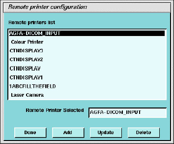
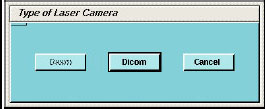
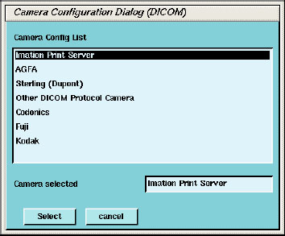
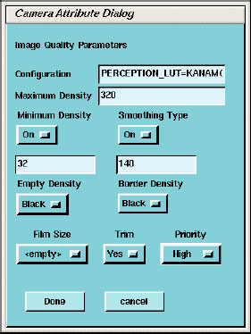
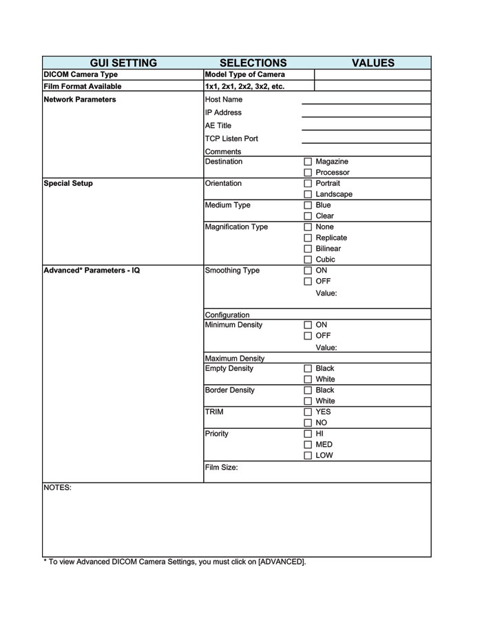

Operating Documentation
Direction 5307452-8EN, Rev# 4
Discovery CT750 HD Service Methods - Adv
Operating Documentation |
| Required Persons | Preliminary Reqs | Procedure | Finalization |
|---|---|---|---|
| 1 | Timing Not Applicable | Timing Not Applicable |
Use this procedure to configure DICOM filming devices (camers, printers) on the system.
| Last Revised: | 26 September 2008 |
| Potential For Data Loss. Empty all filming queues before modifying
camera parameters. Step contains a data table link for recording important Camera setup information from the setup screens. | |
| Filmer DICOM Application Entity Titles may be site specific. Make sure that you check with the Filming Device Service Representative and the hospital network administrator to ensure you are using the correct AE Title for the destination filming device. | |
| Condition | Reference | Eff |
|---|---|---|
Filming Device Service Representative to assist in camera/printer setup for best image quality film presentation. | - | - |
Hospital DICOM network is operational. | - | - |
Filming device is connected to the DICOM network with the correct filmer DICOM interface. | - | - |
Filming device is DICOM protocol compatible. | - | - |
Filming device DICOM Conformance Statement document is available. | - | - |
| NOTE: | This section contains procedures for recording important Camera setup information. Use the table(s) at the end of this section to record information from the setup screens. |
Click on the [SERVICE DESKTOP ] button.
On the Desktop toolbar, select [CONFIGURATION] and [INSTALL CAMERA] .
The Install Camera window appears, along with a warning message pop-up box, to remind you that all filming queues must be empty before you begin to update or delete a camera.
Illustration 1: Warning

A list of cameras installed is displayed.
To add a new camera, click the [ADD] button.
Illustration 2: Remote Printer Configuration

A dialog window for the camera type (POSTSCRIPT* / DICOM) appears.
*POSTSCRIPT devices must use the setup procedures shipped with the option.
Illustration 3: Dialog Box for camera Type

| NOTE: | Digital/Analog DASM is not supported with this product. |
Select the appropriate model from the list and click [SELECT] . Clicking [SELECT] presets all the parameters to that model except the Network parameters.
Illustration 4: DICOM Camera Model Dialog

Selection of a different camera model clears the Image Quality parameters, because these are camera manufacture dependant.
| NOTE: | It is advised to recheck the preset information with the camera manufacturer's representative. |
Enter the NETWORK PARAMETERS:
Device Name
A unique name used to identify the camera.
Host Name
DICOM print server host name, as defined by the hospital.
IP Address
DICOM print server IP address, as defined by the hospital.
AE Title
DICOM print server application entity title, as defined by the print server. You should consult the manufacturers DICOM Conformance Statement.
| NOTE: | The Application Entity Title for the camera may be site specific. Make sure that you check with the Camera Manufacturer's Representative and the hospital network administrator to ensure you are using the correct AE Title for the destination DICOM Print Camera. |
TCP/IP Listen Port
DICOM print server TCP/IP listen port, as defined by the server. You should consult the manufacturers DICOM Conformance Statement.
Comments
Optional comments used by the DICOM print server.
Illustration 5: DICOM Camera Configuration

Medium Type: specifies the type of film being used. Currently, only [BLUE FILM] and [CLEAR FILM] are supported.
Set Destination to the final location for film output: [MAGAZINE] or [PROCESSOR] .
Orientation selects film orientation. Only [PORTRAIT] is currently supported.
Set Magnification Type. This parameter selects the algorithm used to interpolate pixels for proper film resolution. Set this parameter after consulting the camera manufacture to ensure optimal image quality. Choices are describe below:
[None] - No interpolation. This option is not suported by all cameras.
Replicate - Adjacent pixels are interpolated. This can result in "pixelized" images. This algorithm is not normally preferred.
Bilinear - A 1st order interpolation of pixels. Results in images usually described as blurred. This algorithm is not normal prefrerred.
Cubic - A 3rd order interpolation. Used with a large number of possible formulations. Camera manufactures define parameters called "smoothing type" to set coefficients used in this algorithm. The implementation of these "smoothing coefficients" is camera dependent.
Set the Standard Film Formats. Chose the film formats by selecting [On] in the pulldown menu box located below each selection. Valid film formats are set by the camera manufacture. IMATION for example, doesn’t support 4x4, 2x4 or 1x2 and AGFA does not support 2x4. The DICOM print convention designates film formats by column and row (e.g. 12 on 1 film is 3x4).
Click the [ADVANCE] button, after configuring the camera. This creates the camera device file for you atuomatically and pops up the Advanced Parameters screen.
Illustration 6: Advance Parameters

Advanced camera parameters control the image quality of films
| NOTE: | For more information on the proper settings for these
parameters, please see the camera’s DICOM Print Device Conformance
Statement or the Camera Manufacturer Representative. You may need to refer to a copy of the Conformance Statement as you are working with the Camera Manufacturer’s Representative, to correctly set up the DICOM Print Camera I/Q and Time-out Settings. |
Configuration - This parameter is manufacturer dependent as is typically used to specify the image contrast. The Configuration field may be up to 1024 characters long. The field will scroll automatically as text is entered. To review your entry, simply click and hold the middle mouse button, while the cursor is in the field, and drag the mouse towards the right (or left) as needed.
| NOTE: | Recommended Configuration setting
values:
|
Smoothing Type - Set Smoothing Type to [On] , and input the selected value. This parameter is used when the magnification type is CUBIC. It represents the coefficient for the image resolution alogrithm. This parameter is camera manufacturer dependent, and should be re-verified with your radiology department.
| NOTE: | Recommended Smoothing Type Starting
Values and Ranges:
|
Maximum Density and Minimum Density - Used to set brightness of the images on film. The range of values is 0-4095, although the valid range for a specific camera is manufacture dependent. For Maximum Density, input the correct value into the text box. For Minimum Density, set it to [On] and input the correct value in the text box.
| NOTE: | Recommended Minimum and Maximum Density Starting Values:
|
Empty Density - This parameter sets the density for empty film viewports. Typically, [Black] is used but [White] is an available option. The minimum and maximum density values are used as the representation.
Border Density - This sets the density for the border used around the film viewports. Typically, [Black] is used but [White] is an available option. The minimum and maximum density values are used as the representation.
Film Size - Allows the system to specify a particular film size, if selected.
Trim - [Yes] produces a white (clear) box surrounding each image.
Priority - This sets the print priority.
When you have completed entry of advanced parameters, select [Done] .
Camera Data Tables: To locate install camera information Click on the [SERVICE DESKTOP] button. On the desktop toolbar select [CONFIGURATION] and [INSTALL CAMERA] . The install camera window appears.
Select each of the cameras that are installed from the list of installed cameras, and click on [UPDATE] to view the camera's settings.
Record the values used to set up each camera in the table that follows:
| NOTE: | Additional information maybe required. Record this information in the Note section of the table. |
| NOTE: | You can determine the information by looking at the contents
of the file located at: /user/g/ctuser/app-defaults/devices/name.cfg where name.cfg is the camera device name from the printer configuration GUI. |
Illustration 7: Print to record information on this form.
